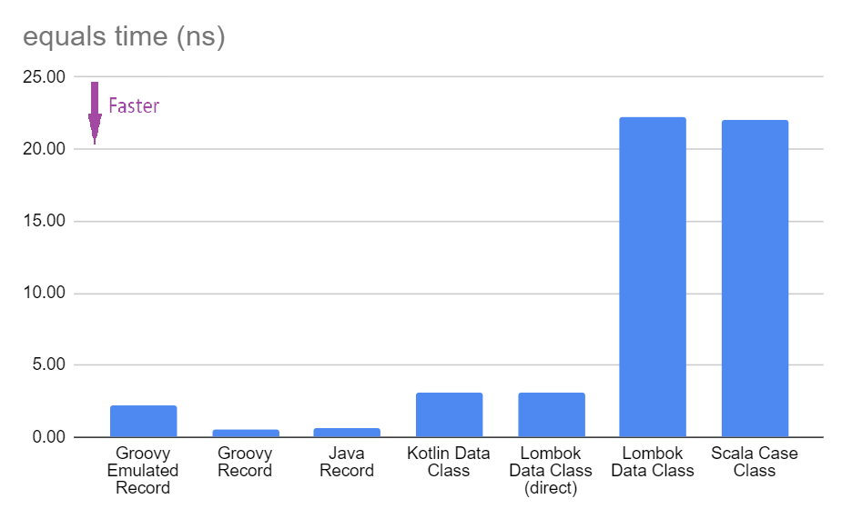

Groovy Record Performance
Author: Paul King
Published: 2023-05-09 11:39PM
We highly recommend the excellent JEP Café series on the @java YouTube channel. Features arriving on the JDK are likely to be features you will be able to use in Groovy soon too!
In JEP Café Episode 8,
José Paumard looks at a number of topics related to Records including the performance
of some of the generated methods like hashCode and equals.
It compares the performance of those methods for Java, Kotlin
data classes and Lombok’s @Data classes.
Let’s do a similar comparison adding in Scala case classes and Groovy records. For Groovy, we’ll cover native records and emulated records (which you can use on JDK8 and above if you are still stuck on older JDK versions).
Our domain
We’ll use the example about 7½ minutes into the JEP Café episode. It is an aggregate of five Strings which together form a kind of aggregate label.
Java record
Here is the Java version:
public record JavaRecordLabel(String x0, String x1, String x2, String x3, String x4) { }Java class with Lombok’s @Data
Here is the Lombok equivalent:
@Data
public class LombokDataLabel {
final String x0, x1, x2, x3, x4;
}Kotlin data class
Here is the Kotlin equivalent:
data class KotlinDataLabel (
val x0: String, val x1: String, val x2: String,
val x3: String, val x4: String)Scala case class
Here is the Scala equivalent:
case class ScalaCaseLabel(x0: String, x1: String, x2: String, x3: String, x4: String)Groovy record
Here is the Groovy equivalent:
record GroovyRecordLabel(String x0, String x1, String x2, String x3, String x4) { }This will produce bytecode similar to a native Java record when run on a version of the JDK supporting records. On earlier JDK versions, it will produce an emulated record. We are going to use JDK17 for our examples. We can force the Groovy compiler to produce emulated code with JDK17 by applying a record option annotation as shown here:
@RecordOptions(mode = RecordTypeMode.EMULATE)
record GroovyEmulatedRecordLabel(String x0, String x1, String x2, String x3, String x4) { }Performance of hashCode
Our benchmark code was written in Java for all cases
and used JMH.
It called the hashCode method of a static instance
for each of the different cases.
The full source code is in a record-performance repo on GitHub.
Here is an example of setting up the static instance (X0 .. X4 are String constants):
private static final JavaRecordLabel JAVA_RECORD_LABEL = new JavaRecordLabel(X0, X1, X2, X3, X4);Here is an example of the benchmark test:
@Benchmark
public void hashcodeJavaRecord(Blackhole bh) {
bh.consume(JAVA_RECORD_LABEL.hashCode());
}We used 3 warmup iterations and 10 benchmark iterations:
jmh {
warmupIterations = 3
iterations = 10
fork = 1
timeUnit = 'ns'
benchmarkMode = ['avgt']
}Results
The tests were run using GitHub actions on various platforms. The results show average time taken in nanoseconds, so a smaller Score means faster.
Using ubuntu-latest
Benchmark Mode Cnt Score Error Units HashCodeBenchmark.hashcodeGroovyEmulatedRecord avgt 10 3.530 ± 0.186 ns/op HashCodeBenchmark.hashcodeGroovyRecord avgt 10 3.180 ± 0.145 ns/op HashCodeBenchmark.hashcodeJavaRecord avgt 10 3.184 ± 0.156 ns/op HashCodeBenchmark.hashcodeKotlinDataLabel avgt 10 7.523 ± 0.272 ns/op HashCodeBenchmark.hashcodeLombokDataLabel avgt 10 19.042 ± 0.425 ns/op HashCodeBenchmark.hashcodeScalaCaseLabel avgt 10 21.639 ± 0.843 ns/op
Using windows-latest
Benchmark Mode Cnt Score Error Units HashCodeBenchmark.hashcodeGroovyEmulatedRecord avgt 10 3.074 ± 0.010 ns/op HashCodeBenchmark.hashcodeGroovyRecord avgt 10 2.832 ± 0.004 ns/op HashCodeBenchmark.hashcodeJavaRecord avgt 10 3.233 ± 0.003 ns/op HashCodeBenchmark.hashcodeKotlinDataLabel avgt 10 4.091 ± 0.006 ns/op HashCodeBenchmark.hashcodeLombokDataLabel avgt 10 19.000 ± 0.027 ns/op HashCodeBenchmark.hashcodeScalaCaseLabel avgt 10 18.984 ± 0.172 ns/op
Using macos-latest
Benchmark Mode Cnt Score Error Units HashCodeBenchmark.hashcodeGroovyEmulatedRecord avgt 10 2.732 ± 0.135 ns/op HashCodeBenchmark.hashcodeGroovyRecord avgt 10 2.995 ± 0.038 ns/op HashCodeBenchmark.hashcodeJavaRecord avgt 10 3.056 ± 0.147 ns/op HashCodeBenchmark.hashcodeKotlinDataLabel avgt 10 6.670 ± 0.308 ns/op HashCodeBenchmark.hashcodeLombokDataLabel avgt 10 16.560 ± 0.425 ns/op HashCodeBenchmark.hashcodeScalaCaseLabel avgt 10 17.542 ± 0.465 ns/op
Graphing the results
We can already see some variance in the results across platforms. So, let’s average the results across the three platforms, which gives us the following chart:
Next we’ll look at some of the reasons behind these differences
and some other considerations which can help you speed up hashCode
or justify why you might want to choose a slower version as a
trade-off for other useful properties.
Discussion
It is always dangerous to draw too many conclusions from microbenchmarks.
We don’t always know if we are comparing apples with apples, or what else
was running on the machine when the benchmarks were executed, or how changing
the benchmark slightly might alter the result. Certainly for hashCode,
the result is impacted by the number of and types of our record components.
Even the particular data instances (arbitrary Strings in our case) will
impact the speed of that method.
But what does this really tell us? For Groovy users, it is good to know
that the hashCode method is as good or better than Java records.
That isn’t too surprising since the Groovy bytecode is almost identical
to the Java bytecode for most parts of records.
For Lombok and the other languages, the hashCode method is slower but only
by a few (or into the 10s of) nanoseconds.
Do we really care about how fast this particular method is?
Certainly if we are storing a lot of our label instances
into hashed collections, it could matter, but otherwise, not so much;
we’ll rarely call this method directly.
But speed is only one of properties we’d like in a good hashCode method.
Another is minimal collisions. We can after all return the constant 0 or -1
from our hashCode and that would be very fast but hopeless in terms of collisions.
Hashing algorithm
For Scala case classes, the Murmur3 hashing algorithm is currently used which is slightly slower that what Java uses but claims to have improved collision resistance. If you are using large collections or records with many components, this tradeoff might be worth considering.
You can use Scala’s algorithm directly in Groovy with a record definition like this:
record GroovyRecordScalaMurmur3Label(String x0, String x1, String x2, String x3, String x4) {
int hashCode() {
ScalaRunTime._hashCode(new Tuple5<>(x0, x1, x2, x3, x4))
}
}And this has almost identical performance to the native Scala example from our earlier bar chart.
If you want a smaller dependency than the Scala runtime jar, you could use the 32-bit Murmur3 algorithm from Guava or write your own combiner to combine hashes produced by Apache Commons Codec’s Murmur3 algorithm on the bytes of each String component. In my tests, both of these alternatives ended up being slower than borrowing Scala’s algorithm, but I didn’t try to optimise my implementation.
If you want to diver deeper on this topic, check out:
-
this great overview article about Optimizing HashMap’s Performance,
-
and this article on optimising a hashing strategy and its impact on collisions,
-
the original C++ implementation of the Murmur3 algorithm.
JDK version support
One difference worth pointing out is that the Groovy, Lombok and other languages work on earlier JDKs. As the GitHub action workflow configuration shows, the example in this blog post are tested on JDK 8, 11 and 17.
matrix:
java: [8,11,17]The Java record examples are tested in JDK 17 (technically requires 16+). This is good to know if you are stuck on earlier versions but should become less of an issue over time.
Caching
A nice Groovy feature provided by some of Groovy’s transforms
is caching, which is exactly what you might want to do
for immutable classes (like records). In fact, in Groovy, caching is turned on
by default for the hashCode and toString methods for @Immutable classes,
but we leave it off by default for records for Java compatibility.
Let’s turn on caching for the hashCode method with Groovy:
@EqualsAndHashCode(useGetters = false, cache = true)
record GroovyRecordWithCacheLabel(String x0, String x1, String x2, String x3, String x4) { }By default, Groovy records behave like Java records.
By supplying the @EqualsAndHashCode annotation, we effectively get
the code for an emulated record instead of the normal record bytecode.
To be as close to records as possible but with caching turned on,
we enable cache and disable useGetters. We’ll discuss the latter
in more detail in the next subsection.
Now, let’s change our Java and Groovy benchmark code to simulate some code that
uses hashCode multiple times. For our purposes, we’ll just sum 5 calls to hashCode:
@Benchmark
public void hashcodeJavaRecord(Blackhole bh) {
bh.consume(JAVA_RECORD_LABEL.hashCode()
+ JAVA_RECORD_LABEL.hashCode()
+ JAVA_RECORD_LABEL.hashCode()
+ JAVA_RECORD_LABEL.hashCode()
+ JAVA_RECORD_LABEL.hashCode());
}And we can do the same for Groovy. Here are the results of our new benchmark:
Benchmark Mode Cnt Score Error Units HashCodeCacheBenchmark.hashcodeGroovyCacheRecord avgt 10 4.296 ± 0.108 ns/op windows-latest HashCodeCacheBenchmark.hashcodeGroovyCacheRecord avgt 10 4.787 ± 0.151 ns/op ubuntu-latest HashCodeCacheBenchmark.hashcodeGroovyCacheRecord avgt 10 5.465 ± 0.045 ns/op macos-latest HashCodeCacheBenchmark.hashcodeJavaRecord avgt 10 21.956 ± 0.023 ns/op windows-latest HashCodeCacheBenchmark.hashcodeJavaRecord avgt 10 33.820 ± 0.750 ns/op ubuntu-latest HashCodeCacheBenchmark.hashcodeJavaRecord avgt 10 32.837 ± 1.136 ns/op macos-latest
As expected, the effect of caching is clearly visible. We could certainly
write our own caching with an explicit hashCode method in Java and perhaps
call into Objects.hash or similar, but it’s not as nice as having a declarative
approach to achieve that.
As a side note, we could add @Memoized to the hashCode method in our earlier
GroovyRecordScalaMurmur3Label example to turn on caching when using that algorithm.
Supporting JavaBean-like behavior
One other "feature" of Java (and Groovy) records is the ability to override the
record component "getters". You could for instance, write a 3-String label record in Java that
always returns its x1 component in uppercase:
public record JavaRecordLabelUpper(String x0, String x1, String x2) {
public String x1() { return x1.toUpperCase(); }
}Now using the x1() getter method will give you the uppercase version.
Just be aware though that hashCode (and equals) don’t use the getter
but access the field directly.
So, while all the components might be equal in the following example, the hashcode (and the record as a whole) won’t be equal:
private static final JavaRecordLabelUpper JAVA_UPPER_1
= new JavaRecordLabelUpper("a", "b", "c");
private static final JavaRecordLabelUpper JAVA_UPPER_2
= new JavaRecordLabelUpper("a", "B", "c");
...
assertEquals(JAVA_UPPER_1.x0(), JAVA_UPPER_2.x0());
assertEquals(JAVA_UPPER_1.x1(), JAVA_UPPER_2.x1());
assertEquals(JAVA_UPPER_1.x2(), JAVA_UPPER_2.x2());
assertNotEquals(JAVA_UPPER_1.hashCode(), JAVA_UPPER_2.hashCode());
assertNotEquals(JAVA_UPPER_1, JAVA_UPPER_2);This is exactly as expected from the record-related parts of the JLS specification and is a reasonable design decision given that records are handling the use case of "a simple aggregate of values". Indeed, records step away from many of the JavaBean conventions, so we might expect some differences, yet not using the getter might still seem strange to some folks.
The JLS specification elaborates further, stating that the above JavaRecordLabelUpper
class might be considered bad style. The rationale is in terms of a record r2 derived
from the components of record r1:
R r2 = new R(r1.c1(), r1.c2(), ..., r1.cn());For any well-behaved record class, r1.equals(r2) should be true, which
won’t be the case for JavaRecordLabelUpper.
Accessing the component through its getter is slower but would preserve the above property. Both the Lombok and Scala implementations use the getter. This accounts for some of the reduced speed of those implementations.
Groovy records default to Java behavior here but allow you to use the getters
for hashCode (and equals and toString) if you so desire. It will be slower
but now preserves traditional JavaBean-like getter behavior.
Here is what the code would look like:
@EqualsAndHashCode
record GroovyRecordUpperGetter(String x0, String x1, String x2) {
String x1() { x1.toUpperCase() }
}The explicit @EqualsAndHashCode annotation tells the compiler to provide
Groovy’s default generated hashCode bytecode which does use getters rather
than special record bytecode. It ends up being the same hashing algorithm but
use the getters to access the components.
And now our tests pass (with assertEquals instead of assertNotEquals):
private static final GroovyRecordUpperGetter GROOVY_UPPER_GETTER_1
= new GroovyRecordUpperGetter("a", "b", "c");
private static final GroovyRecordUpperGetter GROOVY_UPPER_GETTER_2
= new GroovyRecordUpperGetter("a", "B", "c");
...
assertEquals(GROOVY_UPPER_GETTER_1.hashCode(), GROOVY_UPPER_GETTER_2.hashCode());Summary
Groovy records have good hashCode performance. There are times when you might want to
enable caching. On rare occasions, you might want to also consider swapping the hashing
algorithm or enabling getters, but if you need to, Groovy makes that easy too.
Performance of equals
For this benchmark, the equals method of a static instance
was called passing in a second static instance.
Here is an example of our benchmark code:
@Benchmark
public void equalsGroovyRecord(Blackhole bh) {
bh.consume(GROOVY_RECORD_LABEL.equals(GROOVY_RECORD_LABEL_2));
}Results
As before, the tests were run using GitHub actions on various platforms. The results show average time taken in nanoseconds, so a smaller Score means faster.
Using ubuntu-latest
Benchmark Mode Cnt Score Error Units EqualsBenchmark.equalsGroovyEmulatedRecord avgt 10 2.573 ± 0.017 ns/op EqualsBenchmark.equalsGroovyRecord avgt 10 0.592 ± 0.002 ns/op EqualsBenchmark.equalsJavaRecord avgt 10 0.595 ± 0.006 ns/op EqualsBenchmark.equalsKotlinDataLabel avgt 10 3.560 ± 0.024 ns/op EqualsBenchmark.equalsLombokDataLabel avgt 10 24.914 ± 0.118 ns/op EqualsBenchmark.equalsScalaCaseLabel avgt 10 25.000 ± 0.141 ns/op
Using windows-latest
Benchmark Mode Cnt Score Error Units EqualsBenchmark.equalsGroovyEmulatedRecord avgt 10 2.221 ± 0.012 ns/op EqualsBenchmark.equalsGroovyRecord avgt 10 0.511 ± 0.002 ns/op EqualsBenchmark.equalsJavaRecord avgt 10 0.512 ± 0.001 ns/op EqualsBenchmark.equalsKotlinDataLabel avgt 10 3.071 ± 0.007 ns/op EqualsBenchmark.equalsLombokDataLabel avgt 10 21.491 ± 0.038 ns/op EqualsBenchmark.equalsScalaCaseLabel avgt 10 21.477 ± 0.032 ns/op
Using macos-latest
Benchmark Mode Cnt Score Error Units EqualsBenchmark.equalsGroovyEmulatedRecord avgt 10 1.841 ± 0.036 ns/op EqualsBenchmark.equalsGroovyRecord avgt 10 0.557 ± 0.002 ns/op EqualsBenchmark.equalsJavaRecord avgt 10 0.557 ± 0.001 ns/op EqualsBenchmark.equalsKotlinDataLabel avgt 10 2.620 ± 0.013 ns/op EqualsBenchmark.equalsLombokDataLabel avgt 10 19.273 ± 0.125 ns/op EqualsBenchmark.equalsScalaCaseLabel avgt 10 19.335 ± 0.298 ns/op
Graphing the results
Like before, we’ll average the results across the three platforms:

Discussion
We saw for hashCode, that using getters retained JavaBean-like expectations
but with additional costs of calling that method. That impact is doubly worse
for equals since we call the getters for this and the instance we are comparing
against. This explains a significant part of the slowness for Lombok and Scala.
Groovy follows Java behavior here by default but enables you to turn on getters if you desire.
The JLS has an example of a SmallPoint record in section
8.10.3
which is discussed as bad style because with Java records the last statement prints false.
If we enable getters, the last statement now prints true as shown in this Groovy equivalent
of that example:
@EqualsAndHashCode
record SmallPoint(int x, int y) {
int x() { this.x < 100 ? this.x : 100 }
int y() { this.y < 100 ? this.y : 100 }
static main(args) {
var p1 = new SmallPoint(200, 300)
var p2 = new SmallPoint(200, 300)
println p1 == p2 // prints true
var p3 = new SmallPoint(p1.x(), p1.y())
println p1 == p3 // prints true
}
}Never-the-less, for this particular example, it might be better style to leave the normal field access in place and provide something like a compact canonical constructor to truncate the points during construction.
Conclusion
We have looked at a few aspects of the performance of Groovy records and compared them to other languages. Groovy’s default behavior piggybacks directly on Java’s behavior but Groovy has many declarative options to tweak the generated code if needed.